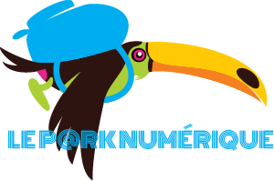
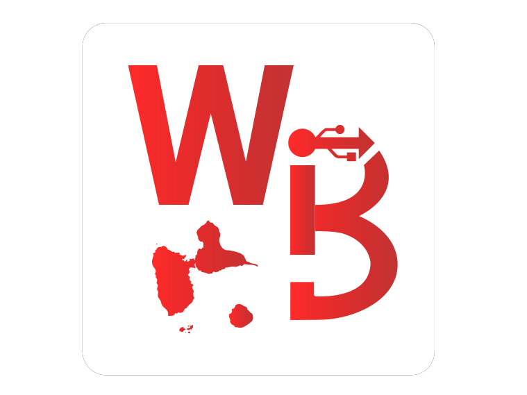
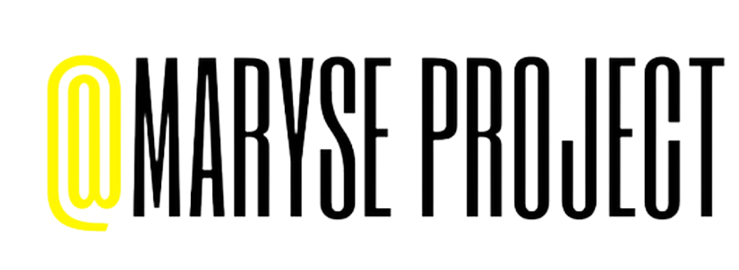

PARCOURS UNIVERSITAIRE
Université des Antilles
Licence de Mathématiques et de Physique
- 2019 : Bac S Mention TB (à 15 ans)
- 2019-2020 : Major de promotion en mathématiques
- 2020-2021 : L2 Mathématiques (Major, Mention TB) et simultanément L2 Physique (2e de promotion, Mention TB)
- 2021-2022: L3 Mathématiques (major de promotion)

LE PARK NUMERIQUE
Fédération d'associations en Outre-Mer et en Île de France, travaillant
à l'inclusion et la médiation numérique au travers notamment de formations aux
nouvelles technologies, d'ateliers de sensibilisation à l'électronique et
d'événements liés à la lutte contre la fracture numérique et l'illectronisme.
Voir leur site

WI-BASH
Association étudiante d'informatique de l'Université des Antilles, travaillant
à la réalisation de projets innovants liés à la programmation, la robotique, la domotique
et bien d'autres domaines, mais aussi à l'organisation d'événements festifs liés à
l'informatique sur le campus.
Voir leur site

@MaryseProject
Fondée au service de la communauté,
Maryse Project a pour but de poser les fondations solides d’une génération tech et réfléchie,
qui voit dans le numérique une opportunité de bâtir un futur plus inclusif, plus responsable, plus éco responsable.
Voir leur site
PARCOURS ASSOCIATIF
Wi-Bash
Association d'informatique de l'UA
- Coorganisation et coordination d'un concours de programmation informatique de grande envergure au sein de l'université : le Codingame
- Création et publication sur le Play Store d'une application mobile de gestion associative en tant que chef de projet et développeur full stack
Le Park Numérique
Association de lutte contre la fracture numérique et l'illectronisme
- Membre du conseil d'administration du Park, menant des actions visant à lutter contre la fracture numérique et l'illectronisme
@MaryseProject
Association d'informatique de l'UA
- Participation au Gwada Girls Tech Day, événement de promotion du rôle de la femme dans le monde numérique et de sensibilisation des jeunes aux métiers de la tech